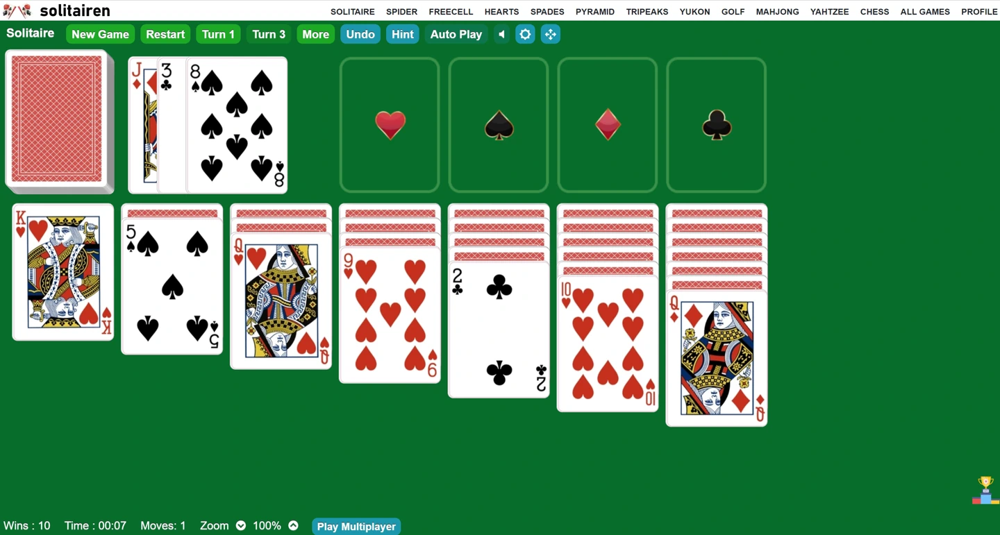

Why Solitaire Turn 3 is the Perfect Game to Challenge your Mind

Are you looking for a game that will captivate your mind and provide endless hours of entertainment? Look no further than Solitaire Turn 3. This classic card game is not only a wonderful way to pass the time, but it also offers a unique challenge for your brain.
Why is Solitaire Turn 3 the perfect game to challenge your mind? Unlike the traditional Solitaire game, where you only turn one card at a time, Solitaire Turn 3 adds an extra layer of complexity by allowing you to reveal three cards at once. This means you'll need to think strategically and plan your moves carefully to uncover the hidden cards and ultimately win the game.
Playing Solitaire Turn 3 requires concentration, critical thinking, and problem-solving skills. As you navigate through the cards and attempt to build the foundation piles, you'll be exercising your brain and honing your decision-making abilities.
Not only is Solitaire Turn 3 a great game for challenging your mind, but it's also a fantastic way to relax and unwind. So, if you're seeking a fun and mentally stimulating game, give Solitaire Turn 3 a try and prepare to be amazed by the endless possibilities it offers.
The benefits of playing Solitaire Turn 3
Are you looking for a game that will captivate your mind and provide endless hours of entertainment? Look no further than Solitaire Turn 3. This classic card game is not only a wonderful way to pass the time, but it also offers a unique challenge for your brain.
Solitaire Turn 3 is more than just a game; it offers a plethora of benefits that can enhance your mental abilities. One of the key benefits of playing Solitaire Turn 3 is improved concentration. As you dive into the game, you'll find yourself fully engrossed, focusing on each move and analyzing the potential outcomes. This level of concentration can have a positive impact on your overall ability to focus and stay attentive in other areas of your life.
In addition to concentration, Solitaire Turn 3 also helps to improve critical thinking skills. Every move you make in the game requires careful consideration and strategic planning. You'll need to evaluate different options and anticipate future moves to effectively progress through the game. This constant exercise of critical thinking can sharpen your problem-solving abilities and enhance your decision-making skills in real-life scenarios.
Furthermore, Solitaire Turn 3 provides an excellent opportunity for mental stimulation and keeping your brain agile. The game requires you to analyze patterns and make quick calculations, stimulating various areas of your brain associated with logic and reasoning. By engaging in regular gameplay, you can keep your mind sharp and agile, reducing the risk of cognitive decline.
Playing Solitaire Turn 3 also offers a sense of accomplishment and satisfaction. As you successfully complete the game, you'll experience a surge of positive emotions, boosting your self-confidence and overall well-being. This feeling of achievement can have a ripple effect in other aspects of your life and enhance your motivation to tackle challenges head-on.
In summary, the benefits of playing Solitaire Turn 3 are numerous. From improved concentration and critical thinking skills to mental stimulation and a sense of accomplishment, this game offers a holistic approach to challenging your mind and enhancing your cognitive abilities. So, if you're looking for a game that provides both entertainment and mental exercise, Solitaire Turn 3 is the perfect choice.
Strategies for winning at Solitaire Turn 3
To win at Solitaire Turn 3, you need more than just luck. This challenging game requires strategic thinking and careful planning. Here are some key strategies that can increase your chances of success:
1. Start with the right mindset: Approach the game with a positive and focused mindset. Remember that winning may take time and multiple attempts, so be patient and persistent.
2. Reveal cards strategically: When revealing the three cards, consider the possible moves they can create. Look for opportunities to uncover hidden cards or create sequences that can be moved to the foundation piles.
3. Prioritize empty tableau slots: Empty tableau slots are valuable resources in Solitaire Turn 3. Make it a priority to create and maintain empty slots as they allow you to move any card to fill the space, providing more flexibility and options for your moves.
4. Build foundation piles evenly: Try to build foundation piles evenly by distributing cards from different suits. This can prevent the accumulation of cards in a single pile and give you more options for future moves.
5. Focus on uncovering hidden cards: The ultimate goal in Solitaire Turn 3 is to uncover all the hidden cards and move them to the foundation piles. Prioritize moves that reveal new cards and create opportunities for further progress.
6. Avoid filling up tableau columns: Be cautious not to fill up tableau columns with too many cards. A full column limits your options and makes it difficult to uncover hidden cards. Aim to keep the tableau columns as empty as possible.
7. Use the undo and restart options wisely: If you make a move that doesn't work out as planned, don't hesitate to use the undo option and explore alternative moves. Similarly, if you reach a dead-end, consider restarting the game to have a fresh start.
8. Practice visualization: As you progress in the game, try to visualize the potential outcomes of your moves. This can help you identify the best course of action and make more informed decisions.
By implementing these strategies and refining your gameplay, you'll increase your chances of winning at Solitaire Turn 3. Remember, the game requires both skill and perseverance, so keep practicing and enjoy the journey towards success.
Tips for improving your Solitaire Turn 3 skills
Solitaire Turn 3 is a game that rewards practice and skill. If you're looking to improve your gameplay and enhance your Solitaire Turn 3 skills, here are some valuable tips to keep in mind:
1. Master the basics: Before diving into advanced strategies, ensure you have a strong grasp of the game's basic rules and mechanics. Familiarize yourself with the goal of the game, the card movements, and the foundation piles' order.
2. Start with the traditional Solitaire game: If you're new to Solitaire Turn 3, it's beneficial to first master the traditional Solitaire game. This will help you develop a solid foundation of skills and understand the fundamentals of the game.
3. Observe and learn: Take the time to observe experienced players or watch tutorial videos. Pay attention to their moves, strategies, and decision-making process. Learning from others can provide valuable insights and inspiration for your own gameplay.
4. Practice regularly: Consistency is key when it comes to improving your Solitaire Turn 3 skills. Dedicate regular practice sessions to the game, even if it's just a few minutes each day. This will help you build muscle memory and reinforce your understanding of the game.
5. Analyze your moves: After each game, take a moment to reflect on your moves and decisions. Identify any missed opportunities or areas for improvement. By analyzing your gameplay, you can learn from your mistakes and make adjustments for future games.
6. Experiment with different strategies: Don't be afraid to try out different strategies and approaches. Solitaire Turn 3 offers a range of possibilities, and what works for one player may not work for another. Experimenting with different techniques can help you discover what suits your playing style best.
7. Stay patient and persistent: Solitaire Turn 3 can be challenging, and winning may not come easily at first. Stay patient, maintain a positive attitude, and keep practicing. As you continue to play and refine your skills, you'll notice gradual improvements in your gameplay.
8. Utilize available resources: Take advantage of online resources, tutorials, and guides that provide tips and strategies for Solitaire Turn 3. These resources can offer valuable insights and help you navigate through challenging situations.
Remember, improving your Solitaire Turn 3 skills is a journey that requires dedication and perseverance. By implementing these tips and investing time in practice, you'll gradually enhance your gameplay and become a more skilled Solitaire Turn 3 player.
The history of Solitaire Turn 3
Solitaire Turn 3, also known as Klondike Solitaire, has a rich and fascinating history that dates back several centuries. While the exact origins of the game are unclear, it is believed to have originated in the late 18th century and gained popularity in the 19th century.
The roots of Solitaire can be traced back to various card games played in Europe during the 16th and 17th centuries. These early games involved arranging cards in specific patterns, and the objective was often to complete the patterns or remove specific cards from the layout.
The modern version of Solitaire is thought to have been developed in the early 19th century in Scandinavia or Russia. It is believed to have been inspired by the French card game called "La Belle Lucie" and the German game "Der Mohr", which both involved arranging cards in tableau columns.
Solitaire gained widespread popularity in the late 19th century when it was introduced to the United States. It quickly became a favorite pastime for people of all ages, thanks to its simplicity and entertainment value. The game's name, "Solitaire," is derived from the French word "solitaire," which means "alone" or "single."
Over the years, Solitaire has undergone various modifications and adaptations. One of the most notable variations is Solitaire Turn 3, which introduced the concept of revealing three cards at once instead of one. This variation added an extra layer of challenge and complexity to the game, making it even more engaging for players.
Today, Solitaire Turn 3 continues to be a beloved classic card game enjoyed by millions of people around the world. It has transcended the physical realm and found its place in the digital landscape, with online platforms and mobile applications offering convenient ways to play the game anytime, anywhere.
The history of Solitaire Turn 3 is a testament to its enduring appeal and timeless nature. From its humble origins to its modern-day iterations, this game has stood the test of time and continues to captivate minds and provide endless hours of entertainment.
Variations of Solitaire Turn 3
Solitaire Turn 3, also known as Klondike Solitaire, has evolved over the years, giving rise to various interesting variations. Each variation offers a unique twist on the classic game, providing players with new challenges and gameplay experiences. Here are some popular variations of Solitaire Turn 3:
1. Spider Solitaire: In Spider Solitaire, the objective is to build eight foundation piles in descending order, starting with the King and ending with the Ace. Unlike Solitaire Turn 3, Spider Solitaire uses multiple decks of cards and requires you to create sequences of the same suit.
2. FreeCell: FreeCell is another variation of Solitaire that offers a different level of challenge. In FreeCell, all 52 cards are dealt face-up at the beginning of the game, and the objective is to build four foundation piles in ascending order, starting with the Ace and ending with the King. The unique feature of this variation is the availability of four free cells, which can be used to temporarily store cards and create more strategic moves.
3. Golf Solitaire: Golf Solitaire is a fast-paced and addictive variation of Solitaire Turn 3. The goal of the game is to remove all the cards from the tableau by building sequences of cards in ascending or descending order, regardless of suit. The catch is that you can only remove cards that are one rank higher or lower than the top card of the waste pile.
4. Pyramid Solitaire: Pyramid Solitaire is a challenging variation that requires you to remove pairs of cards that add up to 13. The game begins with a pyramid-shaped tableau of cards, and the objective is to clear the pyramid by removing pairs of cards that total 13. This variation tests your ability to calculate and make strategic decisions.
5. Yukon Solitaire: Yukon Solitaire is a variation that offers more open tableau columns compared to traditional Solitaire. The objective is to build foundation piles in ascending order, starting with the Ace and ending with the King. Unlike Solitaire Turn 3, Yukon Solitaire allows you to move partially built sequences of cards between tableau columns.
These are just a few examples of the many variations of Solitaire Turn 3 available. Each variation offers its own set of rules and challenges, providing endless opportunities for players to explore and enjoy the game in new ways.
Online platforms for playing Solitaire Turn 3
In today's digital age, playing Solitaire Turn 3 has never been easier. Numerous online platforms offer convenient and accessible ways to enjoy this classic card game. Whether you're looking to play on your computer, tablet, or smartphone, here are some popular online platforms where you can play Solitaire Turn 3:
1. Solitairen.com: Solitairen is a free online website that offers a variety of Solitaire games, including Solitaire Turn 3. It provides a seamless and user-friendly interface, making it easy to enjoy the game on your PC, tablet or mobile device.
2. Solitaire Solitairen: Solitaire Solitairen is free Microsoft Store App that features over 30 variations of Solitaire, including Solitaire Turn 3. It offers customizable gameplay options, such as card designs and backgrounds, allowing you to personalize your gaming experience.
3. Solitaire: Online Card Games: Solitaire: Online Card Games is a Google Play Store App that offers a wide selection of Solitaire games, including Solitaire Turn 3. It provides a clean and intuitive interface, making it suitable for players of all skill levels. Additionally, it offers helpful features like hints and unlimited undos to assist you in the game.
Solitaire Turn 3 vs. other card games for mental stimulation
When it comes to card games, there are countless options available to entertain and challenge your mind. However, Solitaire Turn 3 stands out from the rest as the perfect game for mental stimulation. Let's explore how it compares to other card games in terms of exercising your brain and providing a satisfying challenge.
Conclusion
In the world of card games, Solitaire Turn 3 shines as the perfect game to challenge your mind. Its unique feature of revealing three cards at a time adds an extra layer of complexity and strategic thinking, making it a more mentally stimulating game compared to other variations of Solitaire.
While games like Spider Solitaire and FreeCell also offer a mental challenge, Solitaire Turn 3 strikes the perfect balance between difficulty and accessibility. It requires concentration, critical thinking, and problem-solving skills, making it an excellent choice for individuals looking to exercise their brain and engage in a mentally stimulating activity.
So, if you're searching for a game that will captivate your mind and provide endless hours of entertainment, look no further than Solitaire Turn 3. Give it a try and prepare to be amazed by the endless possibilities it offers.